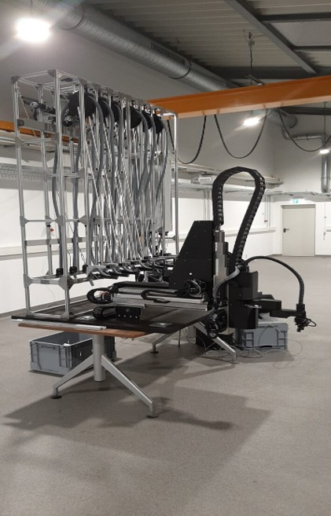
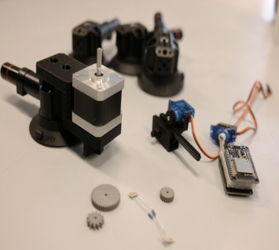

About
About Me
I am a Mechatronics engineer based in Rutesheim, Germany, with hands-on experience across robotics, embedded systems, and machine learning. My background spans software development at Porsche Engineering, AI research at ZSW Baden-Württemberg, and robotics work at the University of Duisburg-Essen — giving me a solid foundation across the full engineering stack.
I work comfortably in both hardware-close C++ environments and higher-level Python and ML frameworks. Whether building real-time control loops for automotive simulators, processing 3D LiDAR data in ROS2, or training deep learning models for perception tasks — I enjoy working at the point where software meets the physical world.
I am currently completing my M.Sc. in Mechanical Engineering (Mechatronics) at the University of Duisburg-Essen and actively looking for roles in robotics, computer vision, or machine learning engineering in Germany.


